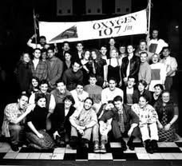
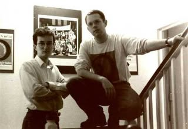
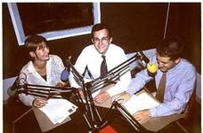
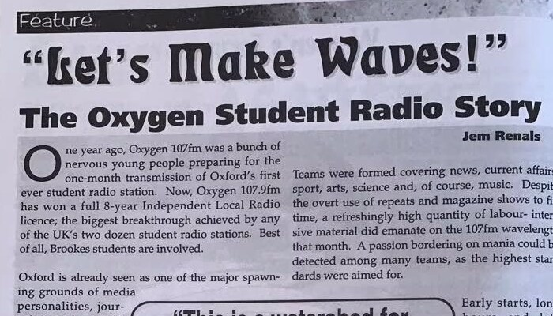

Saturday 13 February 2027 · World Radio Day · Oxford
Still making waves.
Oxygen 107.9FM at 30
In 1997 a group of Oxford students put their own radio station on FM. Thirty years on, the people who built it meet the students who broadcast today for a day on the past, present and future of media, and of who gets heard.
Can't be there?The debate is streamed liveTo student stations worldwide
The live debate
The past, present and future of media.
Media has always been a question of who gets heard. Radio first let one voice reach a whole city at once. Every wave since, from podcasts to creators to AI, has asked the same three questions in a new way. We will ask them together, across two generations of Oxford broadcasters, journalists and creators.
Past
What did we see coming?
In 1997 being heard took a licence, a transmitter and a studio. Oxygen's founders look back at what student radio got right about independent media, long before anyone said "creator".
Present
Who gets heard today?
Anyone can broadcast, and journalists are becoming their own brands. Established reporters and new voices compare notes on trust, reach and what makes someone worth listening to.
Future
Who shapes the next 30 years?
AI now sits between audiences and the news. What is a human voice for, who pays for good media, and what should today's student broadcasters build next?
Moderated by Dr Rob Quicke, founder of World College Radio Day. Student stations around the world send in questions, alongside questions from the room. Speakers will be announced here soon.
The day
One Saturday, on air again.
Friday evening
Welcome dinnerFriday 12 February. A welcome dinner for Oxygen friends and family, the evening before the main day. To join, email nick@oxfordindices.com.
10:00 to 13:00
Live from OxfordA morning of live broadcasting with today's student radio team: interviews, voices from the street and stories from the Oxygen years.
13:00 to 14:00
LunchTime to catch up, meet the speakers and find the person who had the show after yours.
14:00 to 17:00
The live debate: the future of the mediaFour parts, streamed worldwide. Oxygen's founders Philip Weiss and Nick Molden open with the story, followed by established voices, new voices, and AI and the news.
Alumni and students
Two generations, one conversation.
This is a reunion with a purpose. We want the people who learned their craft at Oxygen to meet the students learning it now, and to keep talking after the day is over through a new network linking Oxford media alumni and student broadcasters.
Oxygen alumniPresenters, producers, engineers, newsreaders and everyone who kept the station on air.
Oxford studentsStudent broadcasters, journalists and anyone curious about a life in media.
Journalists, creators and listenersIf you care about where news and audio go next, there is a seat for you.
Supporters
Made possible by friends of Oxygen.
Presented by
ZNDigital communications and public affairs agency, Brussels
Emissions AnalyticsIndependent, real-world emissions data, testing and consultancy
A student experiment that went on air, and never really went off.
Oxygen was the UK's first student radio station on a full FM licence. For that achievement its two founders, Philip Weiss and Nick Molden, received the Young Achievers Award from Her Majesty the Queen on 1 June 1998. The station gave hundreds of people their first microphone, their first newsroom and their first audience. The station changed names over the years. The idea did not: students can make media that matters.
1995The trialA first test broadcast proves Oxford students can run a real station.
1997On air at 1.07pmOxygen 107.9 launches on Valentine's Day, full time on FM and streaming on the early web.
1998A royal awardOn 1 June, the two founders receive the Young Achievers Award from Her Majesty the Queen.
2001The baton passesA new generation carries Oxford student radio online. Today it is Oxide Radio.
2027Thirty years onFounders and current students share one room, and one broadcast, on World Radio Day.

Team photoRSL launch

The early days

In the press"Making student radio history"

In the press"Let's Make Waves!"
The back story
How a student idea became a licensed FM station.
1993The idea takes shape at Christ Church
24/7On 107.9 FM from 14 February 1997
100+Students involved at any one time
1,000Students trained and put on air
It started with a question
In 1993, in a room at Christ Church, two PPE students asked how student media could grow beyond a handful of print magazines. The web was barely known, and Google, podcasts and social media did not exist. Other universities piped simple stations around a single campus. Oxford's colleges are scattered across the city behind thick stone walls, so reaching students meant a real FM transmitter and a real licence.
Two years to win a licence
FM bandwidth was scarce and strictly licensed. The team gathered advice from across Oxford, formed a board of trustees of tutors and alumni, ran a one-month trial broadcast in 1995 and made a full application to the Radio Authority. The bid was competitive, and Oxygen won it. On 14 February 1997 the station went live, 24 hours a day, to students across the city and beyond.
Run by students, for a whole city
With only a handful of paid staff, students made almost all the programmes. More than a hundred were involved at any one time, from the University of Oxford, Oxford Brookes, the College of Further Education and the city itself, organising themselves on the first generation of student email. The schedule mixed intelligent speech with new music, from interviews with world-famous politicians to exclusive sessions with chart bands such as Reef. In all that time the Radio Authority did not receive a single complaint.
The Legacy
The 107.9 frequency has broadcast in Oxford ever since, but not always without controversy. When the station was taken over in 1998 by a professional radio group, within a short time the station was hit with then the largest fine in the history of UK radio. The professionals failed where the students had succeeded.
Oxygen remains the first, and very likely will forever remain the only, fully-licensed FM student radio station in the UK, with the prevalence now of internet radio and podcasts. Around a thousand students were trained and went on air, and every one of them is invited back in February 2027.